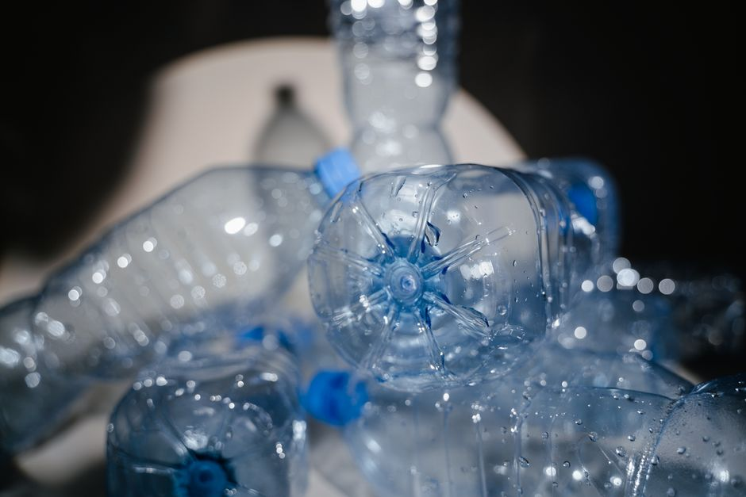

Comment utiliser les bouteilles en plastique pour créer un système d'arrosage automatique

Photo: MART PRODUCTION / Pexels
Une bouteille en plastique peut servir de petit réservoir pour arroser une plante pendant une courte absence. Ce n'est pas un vrai système automatique : il dépanne pour quelques jours à deux semaines, mais il ne remplace pas votre surveillance. Testez-le toujours avant de partir.
Matériel
- une bouteille en plastique propre de 0,5 à 1,5 litre avec son bouchon ;
- un clou fin ou une grosse aiguille, ou une paire de ciseaux solides ;
- de l'eau à température ambiante.
Fabriquer le goutte-à-goutte
Percez le bouchon de deux ou trois petits trous, avec précaution et en tenant le bouchon sur une surface stable. Remplissez la bouteille d'eau, vissez le bouchon, puis retournez la bouteille et plantez le goulot dans le terreau, à quelques centimètres de la tige. L'eau s'écoule lentement quand le terreau sèche. Pour les petits pots, utilisez une petite bouteille ; pour un grand pot, deux bouteilles.
Régler le débit
Faites un essai pendant plusieurs jours avant votre départ. Si l'eau coule trop vite, le terreau reste détrempé et les racines risquent de pourrir ; si elle ne coule pas, agrandissez légèrement les trous. Vérifiez que le pot a un trou de drainage et que l'eau ne s'accumule pas dans la soucoupe.
Pour quelles plantes
Ce montage convient aux plantes qui aiment un terreau légèrement humide, comme le chlorophytum ou le pothos. Évitez-le pour les plantes qui préfèrent sécher entre deux arrosages (cactus, plantes grasses, sansevieria, zamioculcas) : elles supportent très bien une absence sans arrosage.
Précautions
- Remplissez la bouteille avec de l'eau propre et rincez-la avant de la réutiliser, pour limiter les moisissures et les bactéries.
- Gardez les bouteilles et leur contenu hors de portée des enfants et des animaux de compagnie.
- Plusieurs plantes d'intérieur courantes (pothos, philodendron, zamioculcas, sansevieria) sont toxiques pour les chats et les chiens s'ils les mâchent : placez-les hors de leur portée.
Pour une absence de plus de deux semaines, demandez plutôt à un proche de passer arroser vos plantes.
En tant que Partenaire Amazon, je réalise un bénéfice sur les achats remplissant les conditions requises.